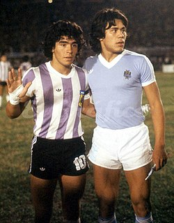
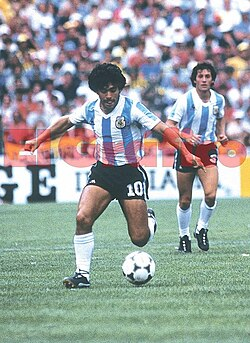
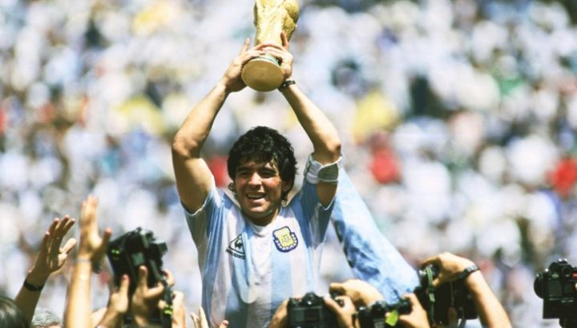
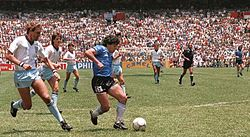
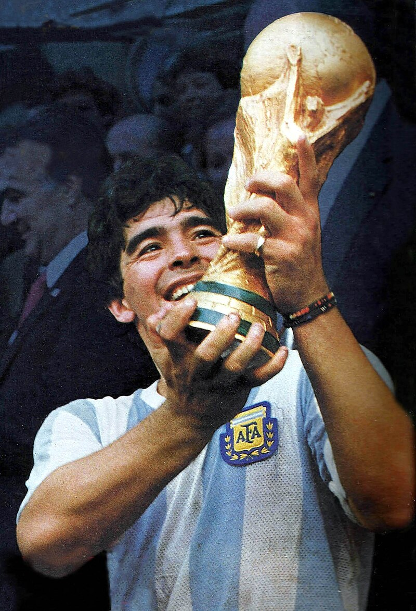
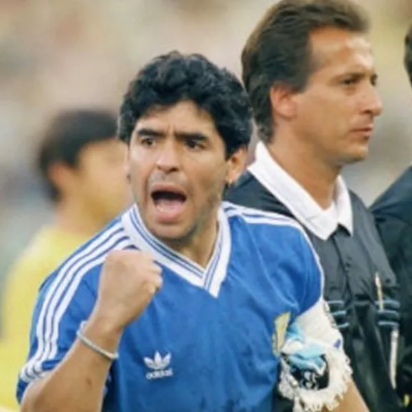
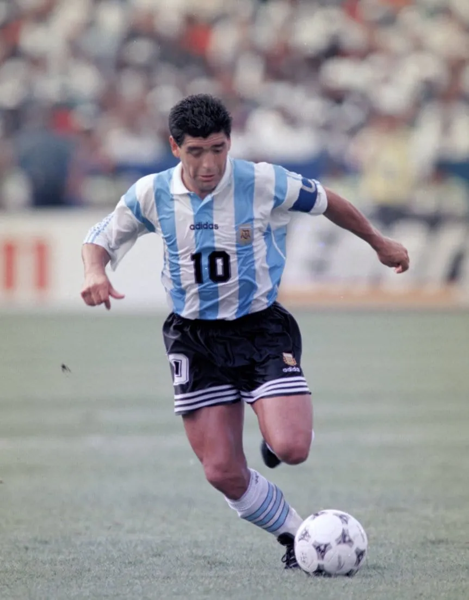

SELECCIÓN NACIONAL
Primeras convocatorias y campeón del Mundial Juvenil (1977-1979)

Maradona debutó oficialmente en la Selección Argentina mayor el 27 de febrero de 1977, a los 16 años, en un partido contra Hungría en La Bombonera, en el que ingresó en el segundo tiempo y casi marca su primer gol. Este debut generó gran expectativa, ya que había disputado solo 11 partidos en Argentinos Juniors y había sido entrenado por César Luis Menotti en las divisiones juveniles. Luego, en la previa del Mundial de 1978, Menotti no lo convocó por su juventud, lo que afectó profundamente a Maradona, quien lloró desconsoladamente la noche en que lo dejaron afuera, en un predio en José C. Paz. En 1979, después de que Argentina ganó su primer campeonato mundial en Japón en el Mundial juvenil, Maradona fue la figura principal del torneo. Anotó tres goles en la fase de grupos, condujo a su equipo a la victoria en los cuartos y semifinales, y anotó dos goles más en la final contra la Unión Soviética, incluyendo un tiro libre, en un partido donde Argentina ganó 3-1. Fue galardonado con el Balón de Oro y la Bota de Plata como segundo goleador con 6 tantos. La victoria del equipo y el reconocimiento internacional marcaron un momento decisivo en su carrera, y fue recibido en Argentina en una ceremonia en Casa Rosada, consolidando su figura como uno de los talentos más promisorios del fútbol.
Primer Mundial y fracaso en España 82 (1980-1982)

Tras su éxito en el campeonato juvenil, Maradona continuó destacándose en el fútbol argentino, logrando su primer título con Boca Juniors en 1981. Por eso, había mucha expectativa en los medios y en los aficionados argentinos por su participación en el Mundial de España, donde también se lo veía buscando revancha por no haber sido parte del equipo que ganó en 1978. Debutó en la Copa del Mundo el 13 de junio de 1982 frente a Bélgica en Barcelona; Argentina perdió 1-0 en un partido marcado por la tensión por la Guerra de las Malvinas. Cinco días después, Argentina ganó 4-1 a Hungría, con sus primeros dos goles en el torneo, asegurando su pase a la segunda fase. En esa etapa, enfrentaron a Italia y Brasil; Argentina perdió ambos partidos. Maradona fue marcado brutalmente por Claudio Gentile en el duelo con Italia, recibiendo un récord de 26 faltas en un solo partido, y fue expulsado tras una entrada violenta a Batista en el partido con Brasil, poniendo fin a su participación en ese Mundial.
Campeón mundial en México 1986

Tras el Mundial de 1982, Maradona fue criticado y considerado una "decepción". Menotti fue reemplazado por Bilardo, quien convirtió a Maradona en capitán en lugar de Passarella, lo que generó tensión. Después de casi tres años sin jugar, Maradona volvió en 1985 en un amistoso contra Paraguay y en las eliminatorias, logrando que Argentina clasificara al Mundial de México. En ese torneo, sufrió una marcación dura y controversias, pero ayudó a Argentina a avanzar, destacándose en partidos clave. Argentina venció a Corea del Sur y empató con Italia en su debut, y en octavos derrotó a Uruguay con el famoso gol de Pasculli. Maradona consideró ese partido uno de sus mejores en el Mundial.
Contra Inglaterra

En los cuartos de final del Mundial de México, Argentina enfrentó a Inglaterra en un partido cargado de connotaciones históricas, debido a la guerra de las Malvinas. El encuentro, jugado en el Estadio Azteca, tiene dos goles icónicos: la "Mano de Dios" y el "Gol del Siglo". El primero ocurrió a los 51 minutos, cuando Maradona levantó su puño izquierdo y con la mano anotó un gol, justificando luego su acción diciendo que fue "la mano de Dios." El segundo, considerado el mejor gol en la historia de los mundiales, fue una corrida desde su propio campo, eludiendo a seis jugadores y al arquero antes de marcar. Argentina ganó 2-1, avanzando a semifinales, y Maradona fue reconocido como el mejor jugador del torneo y uno de los más grandes en la historia del deporte, elevando su estatus como ídolo y símbolo cultural argentino. Sus goles también dieron lugar a la "Teoría maradoniana", inspiración de numerosos homenajes y monumentos culturales.
Campeón

En la semifinal del Mundial en el Estadio Azteca, Argentina derrotó a Bélgica por 2-0 con goles de su capitán, Maradona, quien fue el jugador más destacado del torneo. La selección argentina, con un Maradona en plena forma y liderazgo, dominó el partido sin mayores dificultades. La final, también jugada en el mismo estadio, fue contra Alemania Federal y reunió a aproximadamente 114 mil espectadores. Argentina empezó ganando con un gol de Brown a los 23 minutos y otro de Valdano a los 55, pero Alemania igualó rápidamente con goles de cabeza de Rummenigge y Völler. Once minutos antes del final, Völler anotó su segundo gol, igualando el marcador y poniendo en riesgo la historia, pero en la jugada final, Maradona maniobró rodeado por tres defensores alemanes, realizó una brillante asistencia a Burruchaga, quien convirtió el gol decisivo y aseguró la segunda Copa del Mundo para Argentina. Durante todo el torneo, Maradona fue el motor del equipo: intentó 90 regates, la cifra más alta del torneo, y recibió un récord de 53 faltas, ayudando a que Argentina ganara el doble de tiros libres que cualquier otra selección. Además, en promedio, participó en más de la mitad de los goles argentinos, con una participación en cerca del 71% de los tantos, incluyendo la asistencia clave en la final. Su rendimiento le valió el Balón de Oro como mejor jugador del evento, y fue considerado por muchos como un campeón sin ayuda, un mérito que él mismo no compartía completamente. En su honor, las autoridades del Estadio Azteca levantaron una estatua suya anotando el famoso "Gol del Siglo", que aún es recordado como uno de los goles más espectaculares en la historia del fútbol mundial.
Subcampeón de Italia 90

Después de su actuación en el Mundial de México, Argentina no mantuvo su supremacía futbolística. En la Copa América de 1987 terminó en cuarto lugar y en 1989 en tercer, generando dudas sobre su próximo mundial. Sin embargo, Maradona convirtió al Napoli en una potencia, ganando dos scudetti y enalteciendo socialmente a su región. Antes del Mundial de 1990, Maradona declaró que sería su último torneo y que luego se retiraría en Boca Juniors. La preparación no fue fácil: el equipo llegó a la sede en medio de dudas, sufrieron lesiones y problemas internos. En el debut, Argentina cayó 1-0 contra Camerún, en un partido marcado por la dureza física del rival y la lesión de Maradona, que fue enforzada por patadas. En el segundo partido, ante la Unión Soviética, Maradona anotó un gol con la mano conocido como la "Mano de Dios" y asistió para otro, ayudando a clasificar a Argentina. Luego sufrió una lesión en el tobillo frente a Rumania, por lo que tuvo que infiltrarse en varios partidos. Argentina avanzó a octavos, donde venció a Brasil con un gol de Caniggia tras una jugada épica de Maradona. En cuartos, Argentina enfrentó a Yugoslavia y, en un partido difícil, llegó a penales. Goycochea fue decisivo y Argentina pasó a semifinales, donde jugó en Nápoles contra Italia, en un partido muy emotivo y bajo presión por la afición local. Argentina empataron 1-1, ganó en penales, y eliminó a Italia. En la final, Argentina perdió 1-0 ante Alemania en un partido polémico y disminuido por ausencias y expulsiones. Maradona lloró en la premiación y fue el segundo mejor jugador del torneo, siendo un símbolo del fútbol y de su país en ese momento.
Regreso a la Selección y último Mundial (1993-1994)

Después de su participación en el Mundial de México, Argentina no logró mantener su supremacía futbolística. En la Copa América de 1987 quedó en cuarto lugar y en 1989 en tercer, generando dudas sobre su rendimiento en el próximo Mundial. Sin embargo, Maradona llevó al Napoli a la élite internacional, ganando dos títulos de la Serie A y la Copa de la UEFA, además de elevar socialmente su región. Antes de la Copa de 1990 en Italia, Maradona declaró que sería su último mundial y que luego se retiraría en Boca Juniors. La preparación fue tensa: el equipo llegó en medio de controversias, lesiones y problemas internos. En su debut contra Canadá, Argentina ganó 1-0 en un partido en el que Maradona sufrió una lesión. Luego, en la fase de grupos, anotó su último gol en mundiales en la victoria 4-1 sobre Grecia y ayudó en la clasificación a octavos, donde Argentina venció a Nigeria y Rumania, pero fue eliminada tras la suspensión de Diego por dar positivo en efedrina, en un caso que causó gran controversia. Maradona argumentó que la sustancia provino de un medicamento para la gripe entregado por su preparador físico, pero, a pesar de la polémica, fue suspendido por quince meses. En su última participación en un mundial, jugó en Estados Unidos en 1994, donde en el partido contra Bulgaria dio positivo en varias sustancias y fue expulsado, cerrando así su ciclo en la selección argentina con 91 partidos y 34 goles.